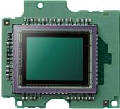

Конкурс "Лукоборье"
Четверо фотографов две недели снимали посетителей парикмахерских Chop-Chop и Birdie на новые цифровые
фотокамеры Panasonic Lumix GX7. Здесь можно посмотреть фотографии и выбрать самого стильного. Трое
победителей, выбранных Антоном Севидовым из Tesla Boy, получат в подарок цифровой фотоаппарат Lumix GX7.
Семеро финалистов конкурса получат полугодовой абонемент на стрижку в любимой парикмахерской. Каждый
проголосовавший сможет принять участие в розыгрыше призов от Panasonic.
фотокамеры Panasonic Lumix GX7. Здесь можно посмотреть фотографии и выбрать самого стильного. Трое
победителей, выбранных Антоном Севидовым из Tesla Boy, получат в подарок цифровой фотоаппарат Lumix GX7.
Семеро финалистов конкурса получат полугодовой абонемент на стрижку в любимой парикмахерской. Каждый
проголосовавший сможет принять участие в розыгрыше призов от Panasonic.


GX7
Креативный
многофунк-
циональный
фотоаппарат
многофунк-
циональный
фотоаппарат
Фотоаппараты GX7 выгодно отличаются своими компактными размерами и высокой производительностью,
кроме того, эта линейка фотоаппаратов имеет максимальные возможности для использования совместимых устройств системы
Micro Four Thirds. Lumix GX7 гарантирует превосходное качество изображения с естественной цветовой палитрой благодаря высокой разрешающей способности и превосходной цветопередаче.

Live Mos +
Venus engine
Venus engine
Компания Panasoniс разработала для фотоаппаратов LUMIX GX7 по-настоящему новый цифровой сенсор Live MOS, позволяющий
делать снимки с 16-мегапиксельным разрешением при высокой чувствительности и минимальном уровне шума.
Таким образом, цифровой сенсор Live-MOS и встроенный процессор Venus Engine позволяют получать впечатляющие
снимки даже при слабом освещении и высоком ISO (максимально до ISO 25600).
16
мегапикселей.
Высокая
чувствитель -
ность. Мини -
мальный
уровень шума
Высокая
чувствитель -
ность. Мини -
мальный
уровень шума